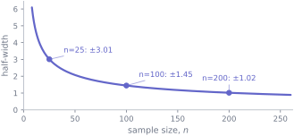
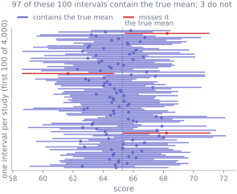

Any number you calculate from a sample is one draw from a distribution of numbers you did not see. S7 established that. This unit is about saying it out loud.
The difference between reporting “the mean score was 60.5” and “the mean score was 60.5, and given how few people we measured, anything from about 58.6 to 62.5 would be consistent with what we observed” is the difference between a number and a finding. Almost every result you will produce or read for the rest of your degree comes with an interval attached, and knowing what that interval does and does not claim is most of the skill.
8.1 Before you start
You should be able to:
explain what a sampling distribution is, and why the standard error is not the standard deviation — S7;
calculate a sample mean and sample standard deviation — S2;
say roughly what fraction of a normal distribution lies within two standard deviations of its centre — S6.
Quick check. A sample of 100 measurements has a standard deviation of 20. What is the standard error of the mean?
Their mean score is 60.51. But had 57 different life-sciences students walked through the door, the mean would have come out somewhere else — a bit higher, a bit lower. The number 60.51 is not wrong, it is simply one of many that could reasonably have happened.
A confidence interval is a range built from the sample, designed so that the procedure which builds it captures the true population value a stated fraction of the time.
Read that sentence again, because the emphasis is doing real work. The 95% in “95% confidence interval” is a property of the method, not of the particular interval sitting in front of you. Once you have computed \((58.58, 62.45)\), the true mean either is in that range or it is not; nothing about it is 95% any more. What is true is that if you repeated the whole study many times, about 95% of the intervals produced this way would contain the answer.
That distinction sounds like pedantry and is not. It is the single most common misreading in applied statistics, and S9 depends on you having it straight.
8.3 The mechanics
For a mean, when the population standard deviation is unknown — which is essentially always — the interval is
where \(\alpha\) is one minus the confidence level. For a 95% interval \(\alpha = 0.05\), so the multiplier is the \(t\) value with \(0.975\) of the distribution below it — the 0.975 you will see in the code.
This is exact when the observations are independent draws from a normal population. For other populations it is an approximation, and how good an approximation depends on the sample size and on how skewed or outlier-prone the data are. It is not distribution-free.
Three parts, each doing a job:
\(\bar{x}\) is where the interval is centred: your best single guess.
\(s/\sqrt{n}\) is the standard error — how much \(\bar{x}\) would bounce around between repeated samples.
\(t_{1-\alpha/2,\,n-1}\) is how many standard errors wide to make it. For 95% confidence it is about 2, and it is slightly more than 2 for small samples.
That last point is the only new idea here. If you knew the population standard deviation you would use 1.96, from the normal distribution. You do not know it; you estimated it with \(s\), and that estimate is itself uncertain. The \(t\) distribution pays for that extra uncertainty by making the interval a little wider, and the smaller the sample the more it charges.
What the interval does not cover
A confidence level is a statement about sampling variation and nothing else. It assumes the model, the design and the arithmetic are right. It does not protect you against:
a sample that was never representative of the population you care about;
systematic measurement error, which shifts every observation the same way;
observations that are not independent — repeated measures, clustered data;
a bug in the code that produced it.
A narrow interval computed from a badly collected sample is a precise answer to the wrong question. Precision and correctness are different properties, and only one of them is visible in the output.
When there is no formula: the bootstrap
The formula above exists because a great deal of theory has been done for means. For a median, a correlation, a ratio of two quantities, or the difference between two percentiles, there may be no convenient formula at all.
The bootstrap sidesteps the theory. The reasoning is that your sample is the best picture you have of the population, so:
draw \(n\) rows from your sample with replacement — some rows appear twice, some not at all;
recompute the statistic on that resample;
repeat several thousand times;
take the middle 95% of the resulting values as your interval.
Sampling with replacement is essential. Without it you would draw the same \(n\) rows every time and see no variation at all.
The bootstrap is remarkably general, and it is not magic. It works badly for very small samples, for statistics near a boundary such as a maximum, and for strongly skewed distributions. It cannot repair bias — if your sample is unrepresentative, every resample of it is unrepresentative in the same way. And for paired or clustered data you must resample whole units: for a paired design, resample pairs, never individual measurements.
8.4 Worked example
An interval for the life-sciences mean, two ways.
By hand first. We have \(n = 57\), \(\bar{x} = 60.51\) and \(s = 7.29\), so the standard error is \(7.29/\sqrt{57} = 0.97\). For 95% confidence with \(56\) degrees of freedom (\(n - 1\), the number that picks which \(t\) distribution to use) the multiplier is \(2.003\), giving a half-width of \(2.003 \times 0.97 = 1.93\) and an interval of \(60.51 \pm 1.93\).
import numpy as npfrom scipy import statsn = life.sizemean = life.mean()se = life.std(ddof=1) / np.sqrt(n)# ppf reverses the cumulative probability: the t value with 0.975 below itt_multiplier = stats.t.ppf(0.975, df=n -1)lower, upper = mean - t_multiplier * se, mean + t_multiplier * seprint(f"multiplier t(0.975, {n-1}) = {t_multiplier:.3f}")print(f"standard error = {se:.3f}")print(f"95% interval for the mean = ({lower:.2f}, {upper:.2f})")
multiplier t(0.975, 56) = 2.003
standard error = 0.965
95% interval for the mean = (58.58, 62.45)
Now the bootstrap, which needs no formula and no \(t\) distribution:
Figure 34.1: Ten thousand resampled means. The bootstrap interval is simply the middle 95% of this pile — the 2.5th and 97.5th percentiles, marked.
The two agree to within a few hundredths, which is what you should expect for a mean from a reasonably sized, reasonably symmetric sample. The bootstrap earns its keep on statistics where the formula runs out:
boot_medians = np.median(resamples, axis=1)print(f"sample median = {np.median(values):.2f}")print(f"95% interval for the median = ({np.quantile(boot_medians, 0.025):.2f}, "f"{np.quantile(boot_medians, 0.975):.2f})")
sample median = 59.80
95% interval for the median = (57.70, 61.80)
Notice the median’s interval is wider than the mean’s. That is not a defect — the median throws away information about how far the extreme values lie, and it pays for that robustness in precision.
One last thing worth seeing. Compare two groups:
for group in ["Life sciences", "Mathematics or Physics"]: scores = usable[usable["background"] == group]["final_score"] k = scores.size err = scores.std(ddof=1) / np.sqrt(k) width = stats.t.ppf(0.975, df=k -1) * errprint(f"{group:<24} n={k:>3} mean={scores.mean():5.2f} ±{width:.2f}")
Life sciences n= 57 mean=60.51 ±1.93
Mathematics or Physics n= 36 mean=75.28 ±2.58
(a) Half-width of the interval against sample size, holding the spread of the data fixed. Precision improves only as \(1/\sqrt{n}\): the curve flattens fast, which is why the last decimal place is always the expensive one.

(b)
Figure 34.2
The second group has a wider interval despite being a perfectly good sample. It has fewer students in it, and the width is driven by \(n\) at least as much as by the spread of the data.
8.5 Try it yourself
Exercise 1 A sample of 36 measurements has mean \(50\) and standard deviation \(12\). The multiplier \(t_{0.975,\,35}\) is \(2.030\). Compute the 95% interval, then say what would happen to its width if the sample were four times as large.
TipShow the solution
\(\text{SE} = 12/\sqrt{36} = 2\), so the half-width is \(2.030 \times 2 = 4.06\) and the interval is \((45.94, 54.06)\).
Quadrupling \(n\) to 144 divides the standard error by \(\sqrt{4} = 2\), giving \(\text{SE} = 1\). The multiplier also shrinks slightly, to about \(1.977\).
Be careful what follows from this. A different sample of 144 would have its own mean and its own standard deviation, so you cannot predict the actual interval. What you can say is that the width would be a little under half. If the mean and standard deviation happened to come out at 50 and 12 again, the interval would be roughly \((48.02, 51.98)\).
The lesson to carry: to halve an interval you need four times the data. This is why precision gets expensive quickly.
Exercise 2 A colleague reports a 95% confidence interval of \((12.1, 12.3)\) for a mean and says the estimate must be reliable because the interval is so narrow. Give two distinct reasons that conclusion does not follow.
TipShow the solution
Any two of:
The interval only accounts for sampling variation. If the sample was drawn from the wrong population, or people who chose not to respond differ from those who did, the interval is narrowly centred on a biased value.
Systematic measurement error shifts every observation the same way and does not widen the interval at all — a miscalibrated instrument produces a beautifully tight interval around the wrong number.
If the observations are not independent — several readings per person, say — the true standard error is larger than \(s/\sqrt{n}\), so the interval is narrower than it should be and its real coverage is below 95%.
Narrowness is partly just a large \(n\). It says nothing about whether the measured quantity is the one the question was about.
Exercise 3 You have 40 patients, each measured before and after a treatment, and you want a bootstrap interval for the mean change. What exactly should you resample, and what goes wrong if you resample the 80 individual measurements instead?
TipShow the solution
Resample the 40 patients, each carrying its own before-and-after pair, and recompute the mean difference on each resample.
Resampling the 80 measurements independently destroys the pairing. A patient’s “before” could be drawn without their “after”, or paired with someone else’s. That throws away exactly the structure a paired design exists to exploit — that the two readings on one person are related — and gives a miscalibrated interval.
Which way it is wrong depends on the data. When before and after are positively correlated, as they usually are, breaking the pairing re-introduces all the between-patient variation the design was built to remove, and the interval comes out too wide. If they were negatively correlated it could come out too narrow. The safe statement is that the number no longer means what it claims.
The general rule: resample whatever unit was independently sampled.
8.6 Check it in Python
The claim that 95% of intervals contain the truth is checkable, and checking it is the fastest way to make the definition stop feeling like a word game.
We treat the whole usable cohort as a population whose mean we happen to know. Then we take a great many small samples, build an interval from each, and count.
population = usable["final_score"].to_numpy()true_mean = population.mean()rng = np.random.default_rng(2026)sample_size, trials =25, 4_000samples = rng.choice(population, size=(trials, sample_size), replace=True)means = samples.mean(axis=1)half_widths = ( stats.t.ppf(0.975, df=sample_size -1)* samples.std(axis=1, ddof=1) / np.sqrt(sample_size))contains = (means - half_widths <= true_mean) & (true_mean <= means + half_widths)print(f"true mean of the population : {true_mean:.2f}")print(f"intervals built : {trials}")print(f"intervals containing the truth : {contains.sum()} ({100* contains.mean():.1f}%)")
true mean of the population : 65.27
intervals built : 4000
intervals containing the truth : 3801 (95.0%)

Figure 34.3: The first hundred of those intervals. Each bar is one study; the dotted line is the population mean, which in real life you would never know. The ones that miss are marked — and nothing about them looks different from the inside.
95.0% — close to the 95% the procedure promises, which is what you should expect when its assumptions roughly hold, as they do for this fairly symmetric population.
One simulation on one population does not prove the method always works. The \(t\) interval is not distribution-free, and on a badly skewed population with a small sample you would see coverage noticeably below 95%. What this shows is that the promise is a real, checkable property rather than a form of words — and that you can check it yourself for any population you are worried about.
The important part is what the failures look like. Around 200 of those intervals missed entirely, and nothing about those 200 distinguishes them from the inside. Each was computed correctly from a legitimate sample; each landed somewhere unlucky. You never know which kind you have, and that is precisely why the 95% belongs to the procedure rather than to your interval.
Two variations worth running yourself. Change 0.975 to 0.995 and watch coverage rise towards 99% as the intervals widen. Then put 0.975 back, change sample_size to 10, and watch the intervals get much wider while the coverage stays near 95% — the method keeps its promise, with less to work with.
8.7 Common wrong turns
Where this usually goes wrong
“There is a 95% probability the true mean lies in this interval”
The commonest error in the subject. Before you collect data, the procedure has a 95% chance of producing an interval that covers the truth. After you have the numbers, the interval either covers it or it does not. The 95% describes the method across many hypothetical studies, not this one result.
Confusing the standard deviation with the standard error
\(s\) describes how spread out the observations are. \(s/\sqrt{n}\) describes how much the mean would move between samples. Adding data leaves the first roughly unchanged and shrinks the second.
Treating a narrow interval as a good analysis
Width measures sampling precision only. Bias, bad design and bugs leave the width untouched while making the centre wrong, and dependence the formula did not allow for makes the width itself wrong.
Expecting the bootstrap to fix a bad sample
Every resample is drawn from your data. If the data are unrepresentative, so is all ten thousand of them. The bootstrap quantifies sampling variability; it cannot manufacture information that was never collected.
Resampling the wrong unit
For paired, clustered or repeated-measures data, resample the independent unit — the patient, the school, the participant — never the individual rows.
Reporting the interval instead of the estimate
An interval without its centre is hard to read, and a centre without its interval is overconfident. Report both, in the units of the thing measured.
8.8 Check yourself
Answers are at the foot of the page. Give a reason as well as an answer.
A 95% interval for a mean is \((4.2, 6.8)\). Which of these is a correct reading?
95% of the observations lie between 4.2 and 6.8
There is a 95% probability the population mean is between 4.2 and 6.8
The interval came from a procedure that captures the population mean in 95% of repeated studies
95% of future samples will have means between 4.2 and 6.8
An interval for the mean is much narrower than the spread of the individual observations.
Once the data are in, the population mean is a fixed number. It is either inside this interval or not.
Future sample means scatter around the population mean, not around this particular interval.
You quadruple your sample size. Roughly what happens to the width of the interval, and why is it not halved by doubling instead?
Give one statistic for which you would reach for the bootstrap rather than a formula, and say why.
In the coverage simulation, about 200 intervals missed the true mean. Was anything wrong with how those 200 were calculated?
A study measures the same 30 people on five occasions and treats all 150 readings as independent when computing a confidence interval. Is the interval likely to be too wide or too narrow?
TipShow the answers
(c). (a) confuses the spread of the data with the precision of the mean — that would be roughly \(\bar{x} \pm 2s\), not \(\bar{x} \pm 2s/\sqrt{n}\). (b) is the standard misreading: after observation there is no probability left. (d) describes something else again, and is not what the procedure guarantees.
The width scales with \(1/\sqrt{n}\), so quadrupling \(n\) roughly halves it. Doubling \(n\) divides the width by \(\sqrt{2} \approx 1.41\), giving about a 29% reduction rather than 50%. Precision is bought at four times the cost you might expect.
Any statistic without a convenient closed-form standard error: a median, a correlation, an interquartile range, a ratio of two means, the difference between two 90th percentiles. The bootstrap needs only that you can compute the statistic on a resample.
No. Every one of them was computed correctly from a legitimate sample. They landed badly by chance, and that is the designed behaviour of a 95% procedure — a method that never missed would be far wider than necessary.
Too narrow, assuming — as is almost always the case for repeated measures — that readings on the same person are positively correlated. Five readings from one person then carry much less information than five readings from five people, so the effective sample size is nearer 30 than 150. Treating them as independent understates the standard error and the real coverage falls below 95%. Strictly the direction depends on the sign of that correlation; negative within-person correlation, which is rare, would push the other way.
Where this shows up next
S9 shows that a two-sided test and a confidence interval are the same calculation viewed from two sides: the test rejects exactly when the interval excludes the null value. S10 builds intervals for the difference between two groups, which is almost always the quantity you actually care about. S11 attaches an interval to a fitted slope, turning a line through a scatterplot into a claim with uncertainty attached.